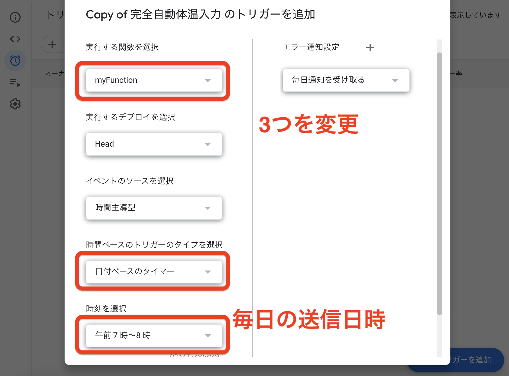

[完全自動体温入力]設定方法
目次
概要
注意事項
設定方法
概要
このツールでは毎日の体温入力を完全に自動化するものです。
注意事項
このツールの作成にあたって細心の注意を払い、検証なども行いましたが、万が一ミスがある場合がございます。
作成者はこのツール及びこのツールによって起きた事柄については一切の責任を取りません
一応保険かけといただけだよ()
大まかな設定方法
・ URLを開き、左上のⒾを押して右上からコピーを保存する。
<注意>学校のアカウントからじゃないとできません
https://script.google.com/d/1XJ5QvMb_n5EhnPFj9z4bxVV35cvd0fNmk3fZHwgNKZJLuVvrACjcNTWs/edit?usp=sharing
・左上のアイコンを押してコピーしたものを開く
・ 下の番号と名前を変える。""に囲った状態でお願いします。
・ お好みでランダム体温の範囲を指定する。(デフォルトは36.3 ~ 36.8)
<<ここのボタンで変更を保存する(押せないときは自動保存済み)>>
・ 上のデバッグの右がMyFunctionに変更して実行を押す
・ 認証画面になるから認証。
・ なにがあっても認証。(googleformに接続するのを許可)
・ 実行が完了されていることを確認
・ もしエラーだったら番号・名前の入力がおかしいと思う(""の中に入れてる？)
・ 左の時計マークからトリガーを設定
・ 実行する関数をMyFunctionに、時間ベースのトリガーのタイプを日付ベースのタイマーに、時刻をお好みに(おすすめは7~8時)

・ 保存したら完成！

・ ここから送信履歴が見れます。